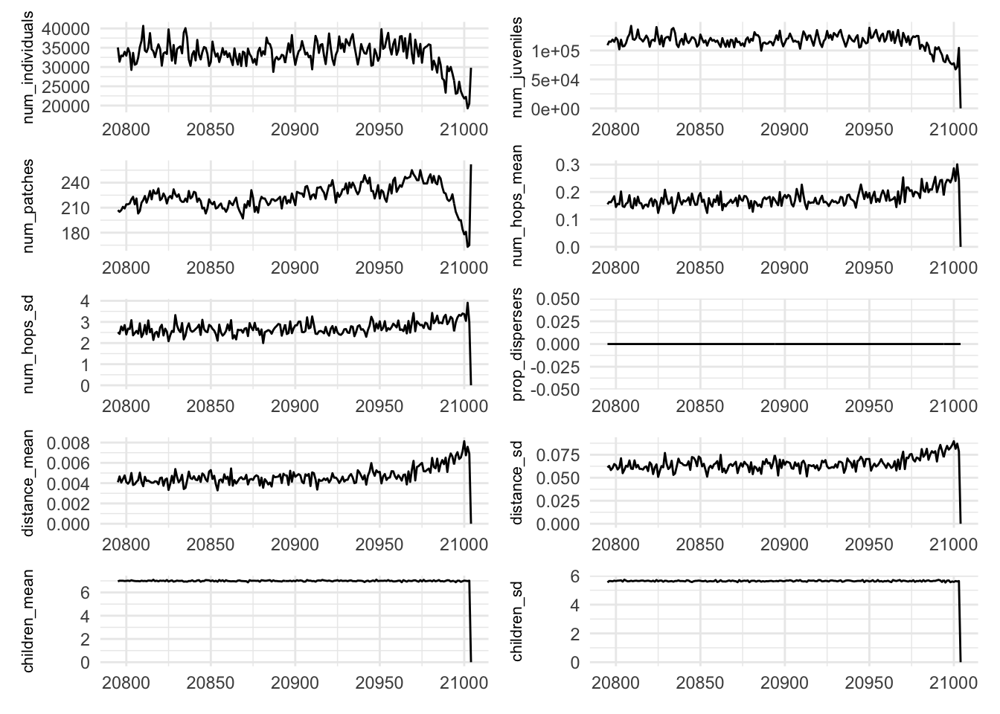
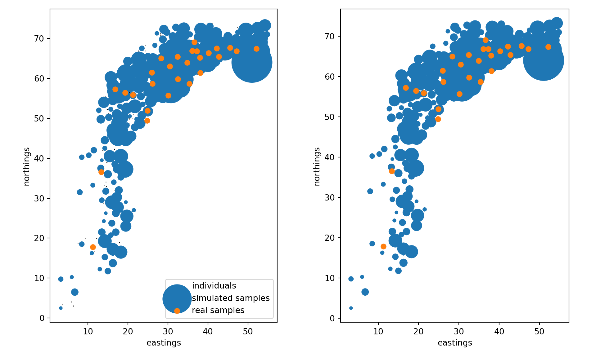
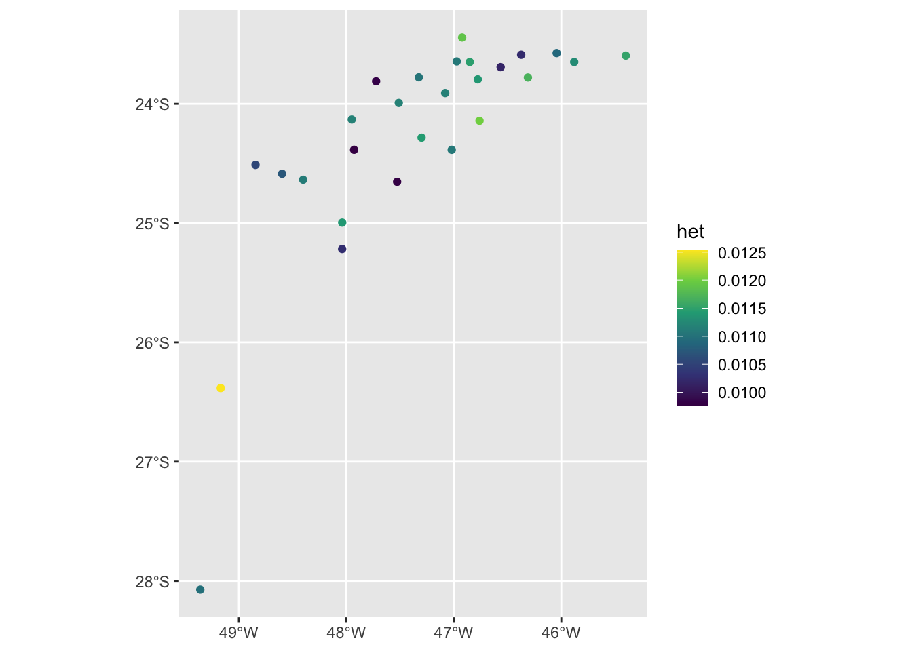
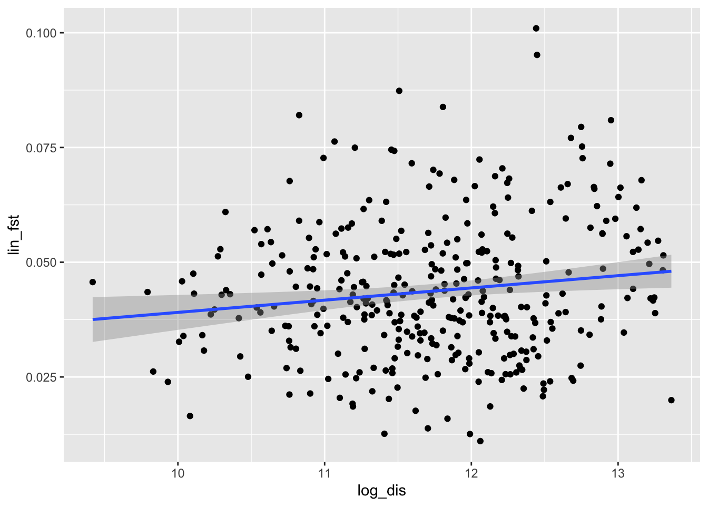
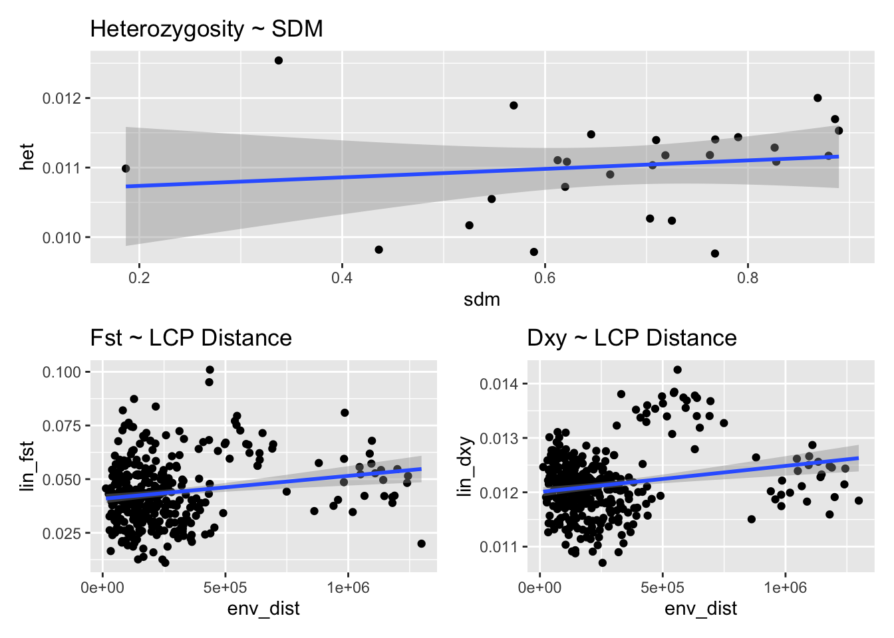

Code
library(raster)
library(reticulate)
library(patchwork)
library(gdistance)
library(here)
library(tidyverse)
library(sf)Getting a handle on how simulations are going and how to tweak things. Also want to get together my workflow for processing tree sequences.
I’ll use this to explore individual simulation output, then package up the code in a python script for running many simulations.
library(raster)
library(reticulate)
library(patchwork)
library(gdistance)
library(here)
library(tidyverse)
library(sf)log_path <- list.files(here("analysis", "slim", "test_out"), "*.log", full.names = TRUE)
s_log <- read_csv(log_path, skip = 1)
out_path <- here("analysis", "slim", "test_out")s_preds <- s_log %>%
select(-years_ago, -generation, -gen_stage) %>%
colnames()
plot_time <- function(var) {
s_log %>%
ggplot(aes_string(x = "years_ago", y = var)) +
geom_line() +
labs(x = NULL) +
theme_minimal() +
theme(axis.title.y = element_text(size = 8))
}
s_plots <- map(s_preds, plot_time)
s_plots[[1]] + s_plots[[2]] + s_plots[[3]] + s_plots[[4]] + s_plots[[5]] + s_plots[[6]] + s_plots[[7]] + s_plots[[8]] + s_plots[[9]] + s_plots[[10]] + plot_layout(ncol = 2)
import sys, os
import warnings
import time
import pyslim, tskit, msprime
import numpy as np
import pandas as pd
import json
import matplotlib.pyplot as plt
import matplotlib.collections as mcts_file <- list.files(here("analysis", "slim","test_out"), "*.trees", full.names = TRUE)
ts_base <- basename(ts_file) %>%
str_remove(".trees")# Load tree sequence, reduce to samples today
# and remove extra population (if present)
orig_ts = pyslim.load(r.ts_file)
_alive_nodes = np.array(
[n for i in orig_ts.individuals_alive_at(0)
for n in orig_ts.individual(i).nodes
if orig_ts.node(n).population == 1
])
orig_ts = orig_ts.simplify(_alive_nodes, keep_input_roots=True)Recapitate using a general coalescent history and a historical Ne based on Anolis carolinensis
# the time units between SLiM and msprime differ, but this is safe to ignore
warnings.simplefilter('ignore', msprime.TimeUnitsMismatchWarning)
recap_ts = pyslim.recapitate(orig_ts,
recombination_rate = 1e-10,
ancestral_Ne=3e5,
random_seed=4327)orig_max_roots = max(t.num_roots for t in orig_ts.trees())
recap_max_roots = max(t.num_roots for t in recap_ts.trees())
print(f"Maximum number of roots before recapitation: {orig_max_roots}\n"
f"After recapitation: {recap_max_roots}")Maximum number of roots before recapitation: 228
After recapitation: 1Simulate mutations
mut_ts = msprime.sim_mutations(
recap_ts,
rate=2.1e-8,
model=msprime.SLiMMutationModel(type=0),
keep=True,
)
print(f"The tree sequence now has {mut_ts.num_mutations} mutations,\n"
f"and mean pairwise nucleotide diversity is {mut_ts.diversity():0.3e}.")The tree sequence now has 7093782 mutations,
and mean pairwise nucleotide diversity is 1.205e-02.def dist(x, y):
return np.sqrt(
(x[..., 0].astype("float") - y[..., 0].astype("float")) ** 2
+ (x[..., 1].astype("float") - y[..., 1].astype("float")) ** 2
)
def assign_patches(ts, patch_radius):
"""
Merge individuals into "patches" using a simple greedy algorithm.
The output is a dictionary that is indexed by (x, y) tuples of spatial
location, and values are lists of the individual IDs assigned to that patch.
Strategy:
1. Round locations to a resolution smaller than `patch_radius`.
2. Sort unique locations by number of individuals.
3. Merge any location with the largest other location within `patch_radius`
that is not itself merged to a larger location.
"""
sample_indivs = ts.individuals_alive_at(0)
sample_locs = np.array([ts.individual(i).location[:2] for i in sample_indivs])
# first round to this many binary digits
digits2 = 2 + int( (-1) * np.floor(np.log2(patch_radius)) )
def coarsen(x):
return np.round( (2 ** digits2) * x ) / (2 ** digits2)
patches = {}
for i, (x, y) in enumerate(sample_locs):
xy = (coarsen(x), coarsen(y))
if xy not in patches:
patches[xy] = []
patches[xy].append(i)
# now merge very close ones:
_sorted_patches = list(patches.keys())
# these will be in decreasing order of size
_sorted_patches.sort(key = lambda x: len(patches[x]), reverse=True)
_sorted_patches = np.array(_sorted_patches)
_merge_with = {}
for j, xyn in enumerate(_sorted_patches):
xy = xyn[:2]
if tuple(xy) not in _merge_with:
pdist = dist(xy, _sorted_patches[(j+1):,:2])
for k, d in zip(range(j+1, len(_sorted_patches)), pdist):
xy1 = (_sorted_patches[k, 0], _sorted_patches[k, 1])
if ((d <= patch_radius) and (xy1 not in _merge_with)):
_merge_with[xy1] = tuple(xy)
for xy1, xy0 in _merge_with.items():
patches[xy0].extend(patches[xy1])
del patches[xy1]
return patchesGet matches between observed localities and simulated patches
real_locs <- read_csv(here("analysis", "slim", "sample_locs.csv")) %>%
# have to do this because I aggregated rasters by a factor of ten to create a smaller landscape, but just told SLiM the resolution was 1/10 of what it was
mutate(slim_x = slim_x / 10, slim_y = slim_y / 10) %>%
# this locality is far away from others
filter(site.name != "prai") %>%
rename(site_name = site.name, sample_size = sample.size)Rows: 28 Columns: 7── Column specification ────────────────────────────────────────────────────────
Delimiter: ","
chr (1): site.name
dbl (6): sample.size, longitude, latitude, code, slim_x, slim_y
ℹ Use `spec()` to retrieve the full column specification for this data.
ℹ Specify the column types or set `show_col_types = FALSE` to quiet this message.
patch_radius = 1.0
min_patch_size = 10
max_dist = 10
rng = np.random.default_rng()
# keep locations to make sure these don't change through recapitation, etc
ind_locs = np.array([ind.location for ind in orig_ts.individuals()])
# Determine "patches" by merging locations within patch_radius of each other
patches = assign_patches(
orig_ts,
patch_radius
)
print(f"Merged {orig_ts.num_individuals} into {len(patches)} patches,")Merged 35069 into 228 patches,real_locs = r.real_locs
real_locs.set_index('site_name', inplace=True)
real_locs.index.names = ['site_name']
# Now only keep patches of size at least min_patch_size
patches = {a:b for a, b in patches.items() if len(b) >= min_patch_size}
# SliM patches are 1/10 the size of those in real_locs because of cell aggregation, which I didn't account for
patch_xy = np.array([xy for xy in patches])
patch_sizes = np.array([len(patches[tuple(a)]) for a in patch_xy])
print(f"... but keeping only the {len(patches)} patches of size "
f"at least {min_patch_size}, having a total of {sum(patch_sizes)} "
f"individuals between them.")
# For each real location find the samples within max_dist of it,
# and the nearest patch with at least the required number of samples... but keeping only the 178 patches of size at least 10, having a total of 34884 individuals between them.real_locs["num_nearby"] = None
close_patches = { }
for name in real_locs.index:
pdist = dist(
patch_xy,
np.array(real_locs.loc[name, ["slim_x", "slim_y"]])
)
nearby = (pdist <= max_dist)
real_locs.loc[name, "num_nearby"] = np.sum(nearby)
close_patches[name] = np.where(nearby)[0]
match_patch_vec = np.repeat(-1, len(real_locs.index))
for k, name in enumerate(real_locs.index):
mp = rng.choice(close_patches[name])
ntries = 0
while mp in match_patch_vec:
mp = rng.choice(close_patches[name])
ntries += 1
if ntries > 100:
raise ValueError("No available nearby patches to match.")
match_patch_vec[k] = mp
assert np.all(match_patch_vec >= 0)
real_locs["match_patch"] = match_patch_vecbasename = r.ts_base
outpath = r.out_path
if True:
# Plot all individuals
fig, (ax1, ax2) = plt.subplots(1, 2, figsize=(10, 6))
sample_indivs = orig_ts.individuals_alive_at(0)
sample_locs = np.array([orig_ts.individual(i).location[:2] for i in sample_indivs])
ax1.scatter(sample_locs[:,0], sample_locs[:,1], marker=".", label="individuals", c='black', s=0.1)
for ax in (ax1, ax2):
ax.scatter(patch_xy[:,0], patch_xy[:,1], s=patch_sizes, marker="o", label="simulated samples")
ax.scatter(real_locs["slim_x"], real_locs["slim_y"], label="real samples")
ax.set_aspect('equal')
ax.set_xlabel("eastings")
ax.set_ylabel("northings")
ax1.legend()
plt.tight_layout()
plt.savefig(f"{outpath}/{basename}.locs.png")
# get matching sample sets
sample_sets = {}
real_locs["num_sim_samples"] = 0
for k, s in enumerate(real_locs.itertuples()):
row = s._asdict()
xy = tuple(patch_xy[row["match_patch"]])
print(xy)
nodes = patches[xy]
n = row["sample_size"]
real_locs.loc[real_locs.index[k], "num_sim_samples"] = len(nodes)
sample_sets[row['Index']] = nodes
(23.5, 60.0)
(52.25, 70.5)
(29.0, 58.5)
(23.5, 50.75)
(36.0, 62.25)
(50.75, 66.75)
(18.0, 57.75)
(38.25, 64.75)
(16.25, 13.75)
(33.75, 61.25)
(24.5, 58.0)
(15.75, 52.25)
(13.5, 29.5)
(36.25, 67.75)
(27.25, 60.25)
(34.25, 67.5)
(28.75, 69.75)
(27.0, 58.25)
(32.5, 66.75)
(25.0, 65.5)
(39.0, 66.5)
(42.0, 71.25)
(40.0, 67.75)
(33.75, 71.0)
(28.75, 55.0)
(27.25, 63.0)
(44.0, 69.5)Heterozygosity
# expected heterozygosity
het_vec = np.repeat(np.nan, len(real_locs.index))
for k in range(real_locs.shape[0]):
name = real_locs.index[k]
samples = sample_sets[name]
if len(samples) > 0:
het_vec[k] = mut_ts.diversity(samples, mode='site')
real_locs["het"] = het_vec# write out text file
real_locs.to_csv(f"{outpath}/{basename}.stats.csv")Pairwise stats
pairs = pd.DataFrame(
np.array(
[[a, b] for a in real_locs.index for b in real_locs.index if a <= b]
),
columns=["loc1", "loc2"],
)
pairs["dxy"] = np.nan
pairs["Fst"] = np.nan
has_samples = np.logical_and(
real_locs.loc[pairs["loc1"], "num_sim_samples"].values > 0,
real_locs.loc[pairs["loc2"], "num_sim_samples"].values > 0
)
slist = []
nlist = []
for n in sample_sets:
s = sample_sets[n]
if len(s) > 0:
nlist.append(n)
slist.append(s)
plist = []
for a, b in zip(pairs["loc1"][has_samples], pairs["loc2"][has_samples]):
plist.append((nlist.index(a), nlist.index(b)))
pairs.loc[has_samples, "dxy"] = mut_ts.divergence(
sample_sets = slist,
indexes = plist,
mode = 'site',
)
pairs.loc[has_samples, "Fst"] = mut_ts.Fst(
sample_sets = slist,
indexes = plist,
mode = 'site',
)# write out text file
pairs.to_csv(f"{outpath}/{basename}.pairstats.csv")# make the data frames r-friendly
sample_locs <- read_csv(here("analysis", "slim", "sample_locs.csv")) %>%
rename(site_name = site.name, sample_size = sample.size) %>%
filter(site_name != "prai")Rows: 28 Columns: 7── Column specification ────────────────────────────────────────────────────────
Delimiter: ","
chr (1): site.name
dbl (6): sample.size, longitude, latitude, code, slim_x, slim_y
ℹ Use `spec()` to retrieve the full column specification for this data.
ℹ Specify the column types or set `show_col_types = FALSE` to quiet this message.pop_sum <- py$real_locs %>%
as_tibble() %>%
mutate(num_nearby = unlist(num_nearby)) %>%
bind_cols(sample_locs %>% select(site_name)) %>%
st_as_sf(crs = 4326,
coords = c("longitude", "latitude"))
gen_dist <- py$pairs %>%
as_tibble()Heterozygosity on the map
ggplot() +
geom_sf(data = pop_sum, aes(color = het)) +
scale_color_viridis_c()
Function to convert distance matrix to 3-column data frame
dist_to_df <-function(dist)
{
dist=as.matrix(dist)
rowname=rownames(dist)
colname=colnames(dist)
rown=row(dist)
coln=col(dist)
dist.v=as.vector(stats::as.dist(dist))
rown.v=as.vector(stats::as.dist(rown))
coln.v=as.vector(stats::as.dist(coln))
res=tibble(loc2=rowname[rown.v],loc1=colname[coln.v],dis=dist.v)
res
}Plot isolation-by-distance
pop_dist <- st_distance(pop_sum)
colnames(pop_dist) <- pop_sum$site_name
rownames(pop_dist) <- pop_sum$site_name
pop_dist_df <- dist_to_df(pop_dist)
gen_dist_df <- gen_dist %>%
filter(loc1 != loc2) %>%
left_join(pop_dist_df, by = c("loc1", "loc2")) %>%
mutate(lin_fst = Fst / (1 - Fst),
lin_dxy = dxy / (1 - dxy),
log_dis = log(dis))
gen_dist_df %>%
ggplot(aes(x = log_dis, y = lin_fst)) +
geom_point() +
geom_smooth(method = "lm")`geom_smooth()` using formula 'y ~ x'
Isolation by environment
r <- raster(here("/Users/connorfrench/Dropbox/Old_Mac/School_Stuff/CUNY/enyalius-phylogeography/enyalius/analysis/slim/geo_layers/iheringii_agg.tif"))
tr <- transition(r, mean, directions = 8) %>%
gdistance::geoCorrection("c") #correct for geographic distortion
cdist <- costDistance(tr, st_coordinates(pop_sum)) %>%
as.matrix()
dimnames(cdist) <- list(c(pop_sum$site_name), c(pop_sum$site_name))
cdist_df <- dist_to_df(cdist) %>%
rename(env_dist = dis)
resist_dist_df <- gen_dist_df %>%
left_join(cdist_df, by = c("loc1", "loc2"))
sdm_vec <- raster::extract(r, st_coordinates(pop_sum))
pop_sum$sdm <- sdm_vec
het_env <- ggplot(data = pop_sum, aes(x = sdm, y = het)) +
geom_point() +
geom_smooth(method = "lm") +
labs(title = "Heterozygosity ~ SDM")
fst_env <- ggplot(data = resist_dist_df, aes(x = env_dist, y = lin_fst)) +
geom_point() +
geom_smooth(method = "lm") +
labs(title = "Fst ~ LCP Distance")
dxy_env <- ggplot(data = resist_dist_df, aes(x = env_dist, y = lin_dxy)) +
geom_point() +
geom_smooth(method = "lm") +
labs(title = "Dxy ~ LCP Distance")
het_env / (fst_env + dxy_env)`geom_smooth()` using formula 'y ~ x'
`geom_smooth()` using formula 'y ~ x'
`geom_smooth()` using formula 'y ~ x'
p <- raster("/Users/connorfrench/Dropbox/Old_Mac/School_Stuff/CUNY/enyalius-phylogeography/enyalius/analysis/slim/test_out/sim_1766744735513_00005_density.png")
values(p) <- values(p) / max(values(p))
r2 <- raster("/Users/connorfrench/Dropbox/Old_Mac/School_Stuff/CUNY/enyalius-phylogeography/enyalius/analysis/slim/slim_layers/iheringii.png")
values(r2) <- values(r2) / max(values(r2))
p[p < 4e-3] <- NA
r2[r2 == 0] <- NA
r2 <- mask(r2, p)
rval <- na.omit(values(r2))
pval <- na.omit(values(p))
plot(rval, pval)
cor(rval, pval)